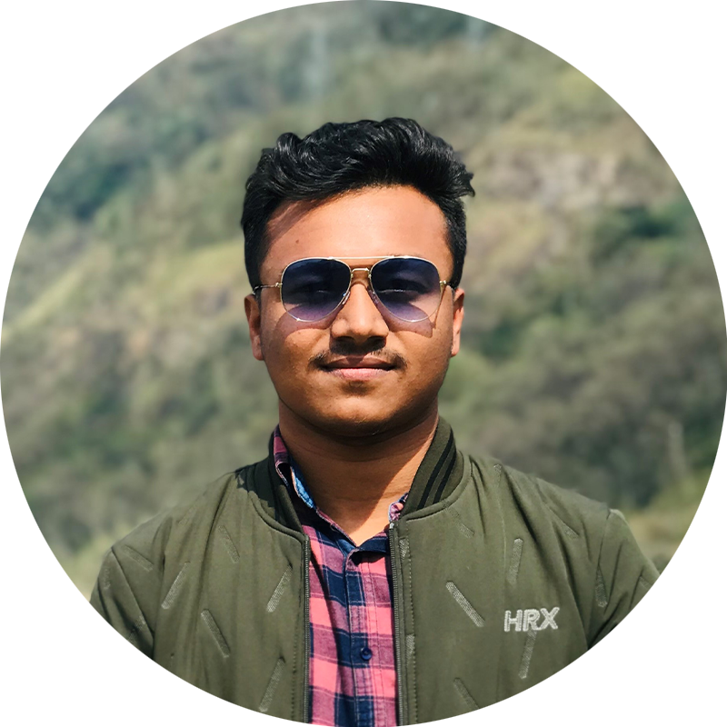

|  |
Pranjal NathMechanical Engineering GraduateJorhat Engineering College LinkedIn Profile Contact Information |
| 2017-21 |
Bachelor of Engineering, Mechanical Engineering, Jorhat Engineering College, Jorhat |
7.5/10 |
| 2017 |
12th (Senior Secondary Examination), Assam Higher Secondary Education Council |
77% |
| 2015 |
10th (Secondary Examination), Secondary Board of Education Assam |
91% |
| Jan’21 | Intern, Berger Paints India Ltd. ,Naltali ,Assam |
| Jun-Jul’19 | Summer Intern, Divisional workshop, ASTC , Jorhat |
| Mar-Aug’20 | Performance Comparison of Two and Three Elliptical Bladed Drag-Based Vertical Axis Savonius Turbines (B.E Project, 6th Semester) |
|
|
| Sep’20-Aug’21 | Desinging and Performance Evaluation OF Winnowing machine with Two and Three Bladed fans (B.E Project, 7th Semester & 7th Semester) |
| Jan’20 | Three week training on different mechanical systems present in Diesel Locomotives in NGC , Diesel Loco Shed, Indian Railways |
| Mar’19 | Three days SDP on Modelling and Analysis In Mechanical Engineering |
| Mar’18 | One week training on Catia under TRTC, Guwahati |
| Sep-Oct’17 | Six weeks online training on AutoCad under Internshala trainings |
| 2019 | Ishan Uday Scholarship |
| 2017 | Cracked CEE (Combined Entrance Examination) Assam |
| 2015 | Anundoram Borooah Award |
| 2020 | Library In-charge at Hostel no. 3, JEC |
| 2018 | Mess Secretary at Hostel no. 3, JEC |
| Hobbies include cricket, carrom, digital content creation, singing |